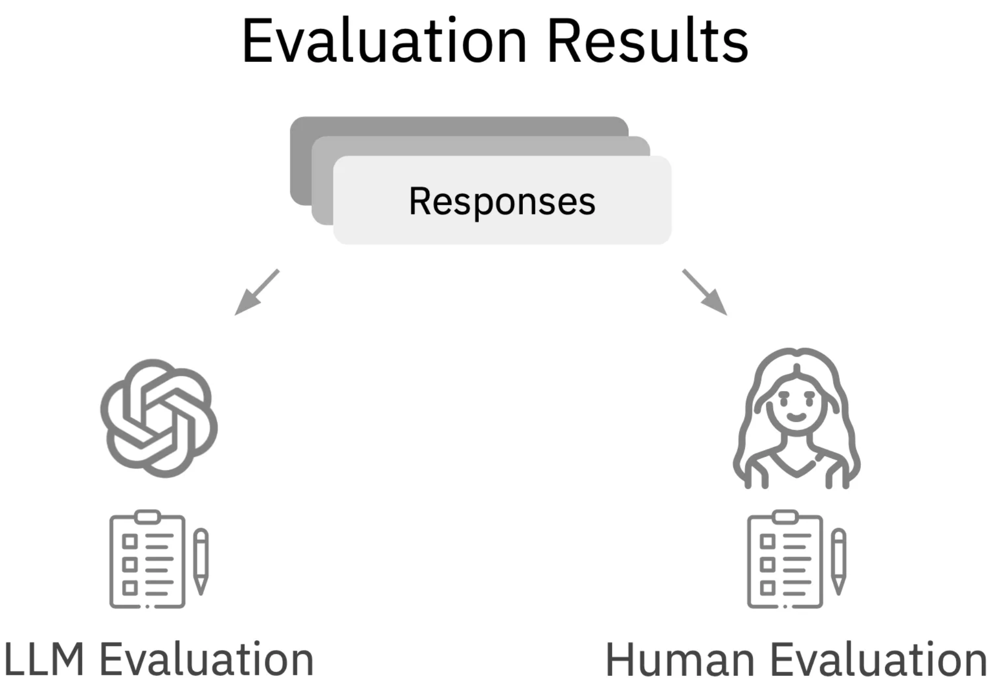

專案動機 (WHY)
大型語言模型（LLM）在許多任務上已展現驚人能力，但這也意味著學術研究的競爭日益激烈。在沒有龐大運算資源的條件下，直接比拼模型性能（俗稱「卷 Performance」）極其困難。因此，我們的研究選擇了另一個切入點：
- 尋找新應用場景：我們不與巨頭比拼通用能力，而是專注於一個尚未被深入探索、但極具價值的領域——創造力 (Creativity)。
- 架構創新：思考如何利用現有資源設計出創新的工作流程與架構，而非從零打造模型。
- 提供學術貢獻：在學術研究中，除了提出新方法，提供新的評估方式與資料集也是重要的貢獻。本專案的主要貢獻包含：
- Dataset: 建立一個用於評估 LLM 創造力的人類評判資料集。
- Evaluation: 提出並驗證使用 LLM 作為評審員（LLM-as-Judge）的可行性，並與人類評估結果進行比較。
核心問題 (WHAT)
本專案旨在解決以下三大核心問題：
- 如何設計一套有效的方法，讓 LLM 在創意發想的任務上表現得更好？
- 如何設計一個多代理人（Multi-Agent）的工作流程與架構，以促進資訊的有效流動與協作？（在當時，尚無如 AutoGen 等成熟套件）
- 如何科學且客觀地評估 LLM 的創造力？
解決方案 (HOW)
我們的核心想法是模仿人類進行創意發想的過程，例如「設計思考」課程中的腦力激盪模式。我們將此概念轉化為一個多代理人系統。
多代理人架構：角色扮演與六頂思考帽
人類在討論時，會透過分享、辯論、從不同角度切入來激盪出火花。我們的方法是讓多個 LLM 代理人模擬這個過程：
- 角色扮演 (Role-Play)：我們發現，若使用同一個來源的 LLM（如多個 GPT-4 實例），它們的思維模式會因訓練資料同質而趨於一致，導致多樣性（Diversity）低落。我們的解決方案是——讓它們扮演不同角色！這個簡單的指令可以顯著提升想法的多樣性。
- 六頂思考帽 (Six Thinking Hats)：我們借鑒了這個經典的平行思維框架，為每個代理人分配特定角色（如樂觀者、悲觀者、事實檢查者等），引導它們從不同維度進行思考。
- 平行互動架構：我們設計了一個能讓所有代理人平行執行、同時互動的架構，確保它們能即時感知到彼此的想法，就像真正在開一場圓桌會議。
“LLM 如果同一家出的 = 相同訓練資料 = Diversity 低。那我們叫他們扮演不同角色呢？ → Diversity upup!”
專案成果預覽

圖四：專案創意發想成果展示
相關資源
技術堆疊與工具 (HOW)
實現這個系統的核心理念是 “Think first then code”，架構設計是 AI 代理人系統的靈魂。我們使用的主要技術和工具如下：
- LLM APIs: OpenAI (GPT series), Google (Gemini), Llama 等。
- Python - Threading: 為了實現代理人之間的即時平行互動，多線程是不可或缺的關鍵技術。
- Python - Parsing: 使用 `re` (正則表達式) 和 `ast` (抽象語法樹) 等工具來穩定地從 LLM 的輸出中提取結構化資訊。
- Data Preprocessing: 使用 `pandas` 處理和準備我們的資料集。
- Prompt Engineering: 精心設計提示詞（Prompt）是引導代理人扮演好角色、有效溝通的基礎。